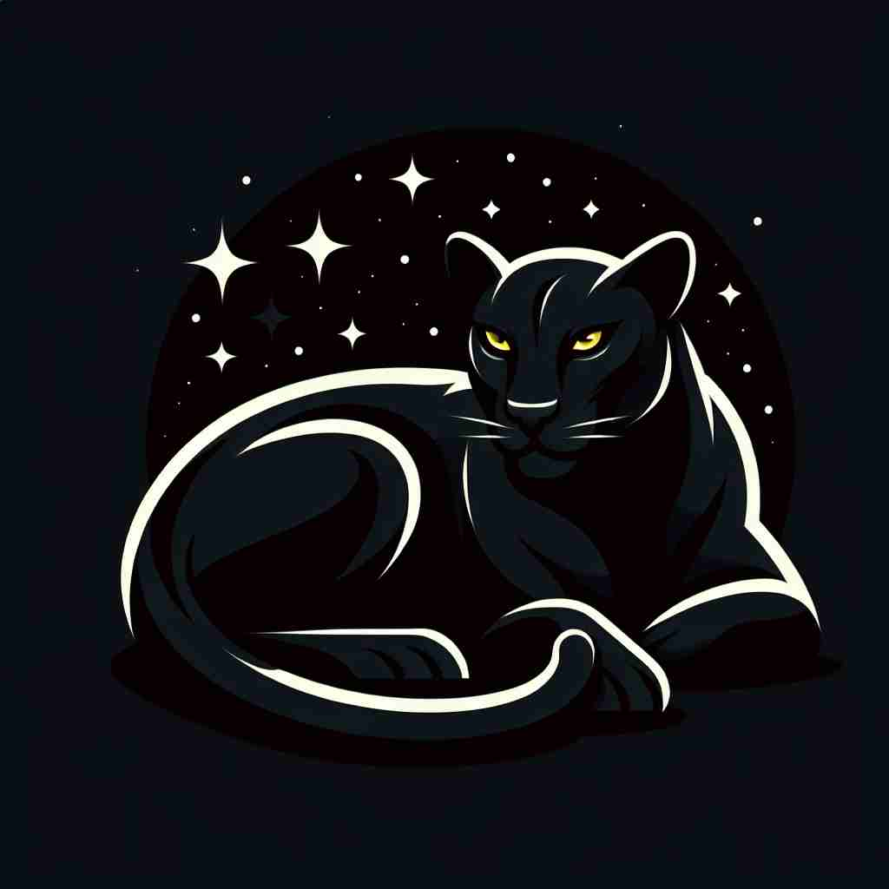

💬 The black night sky is full of shining stars.

💬 The woman looks stunning in her black dress at the evening party.
💬 The black book covers are neatly arranged on the table.

💬 The black panther lay quietly under the stars.
🔈 [blæk]
🗝️ adj. having the darkest color, like coal or night sky
🖼️ 在一个安静的夜晚，天空上没有月亮，只有深邃的黑色笼罩一切。远处的山脉轮廓隐没在这浓重的夜色中，正如煤炭般的漆黑。这种景象体现了'black'作为最深颜色的含义。
🔍 想象一个漆黑的夜晚，这就是'black'的核心含义。从这个意象出发，我们可以联想到深色皮肤、邪恶、忧郁、非法活动等概念，它们都与'黑暗'这一核心意象有关。甚至咖啡和抵制行为也可以通过这个核心概念来理解。记住这个核心图像，就能更容易理解和记忆'black'的多重含义。
💬 The black night sky is full of shining stars.
💬 The woman looks stunning in her black dress at the evening party.
💬 The black book covers are neatly arranged on the table.
💬 The black panther lay quietly under the stars.
🌳 词汇 'black' 本身没有明显的词根、前缀或后缀，但它是一个源自于古英语 'blæc' 的形容词，意为 '黑色的'。没有分解成更小词素的余地。
💡 可以通过与颜色记忆联想，'black' 作为基本颜色之一，可以联想到夜空、炭等典型的黑色物体，帮助记忆其意为 '黑色'。
🗝️ adj. very dark-skinned
🖼️ 在阳光普照的海滩上，一个拥有非常深色皮肤的男士正在进行沙滩排球。他的皮肤在阳光下闪烁着健康的光泽，体现了'black'在形容深色皮肤时的使用。
💬 Many African Americans identify as Black.
❓ 基于肤色的深暗程度
🗝️ adj. evil or wicked
🖼️ 在一个惊悚电影的场景中，黑暗的城堡里弥漫着诡异的气氛。主角面对的是一个笑容阴险的反派，他身穿黑色斗篷，行为诡计多端，象征着'black'作为邪恶或不道德的特点。
💬 The villain had a black heart.
❓ 黑暗常与邪恶联系
🗝️ adj. very sad or gloomy
🖼️ 在一个下雨的下午，一个人坐在窗边，凝视着外面的雨滴。他的心情如窗外阴沉的天空般低落，这时候的一切都透着'black'那种极度悲伤和沉重的感觉。
💬 He was in a black mood after losing his job.
❓ 黑暗与悲伤情绪相联系
🗝️ adj. illegal or involving crime
🖼️ 在一个繁忙的黑市交易现场，灯光昏暗，阴影中有人悄悄交换着非法商品。这里的一切都在法律的阴影之外，正是'black'指涉非法活动和犯罪时的象征。
💬 They were involved in the black market.
❓ 非法活动常在黑暗中进行
🗝️ n. coffee without milk
🖼️ 在一个咖啡馆里，一位绅士点了一杯纯黑咖啡。他微笑着让咖啡师不用加奶，享受那原本的浓郁香气，展现了'black'作为描述不加奶的咖啡的用法。
💬 He always drinks his coffee black.
❓ 纯咖啡的颜色深黑
🗝️ v. to boycott
🖼️ 在一个社会活动中，社区成员决定不去支持某家商店以抗议其不公行为。他们说：'我们要black 他们的产品，直到他们改变政策。'这生动展示了'black'作为抵制某事的意思。
💬 The workers decided to black the company's products.
❓ 将某事物列入黑名单